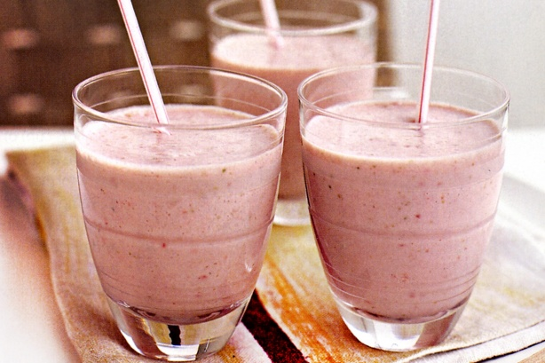

Ingredients:
- 1 x 250g punnet strawberries, hulled, washed.
- 2 overripe bananas, coarsely chopped.
- 750ml (3 cups) milk.
- 260g (1 cup) vanilla-falvoured yoghurt.
Method:
- Place half the strawberries, banana, milk and yoghurt in the jug of a blender and blend until smooth. Pour evenly among 3 serving glasses.
- Repeat with the remaining strawberries, banana, milk and yoghurt. Serve immediately.